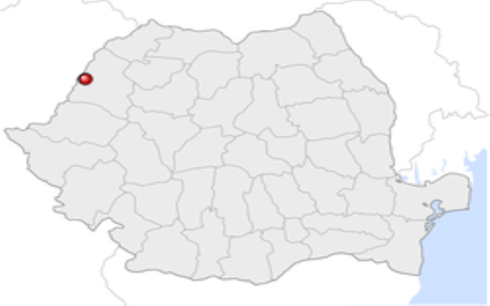
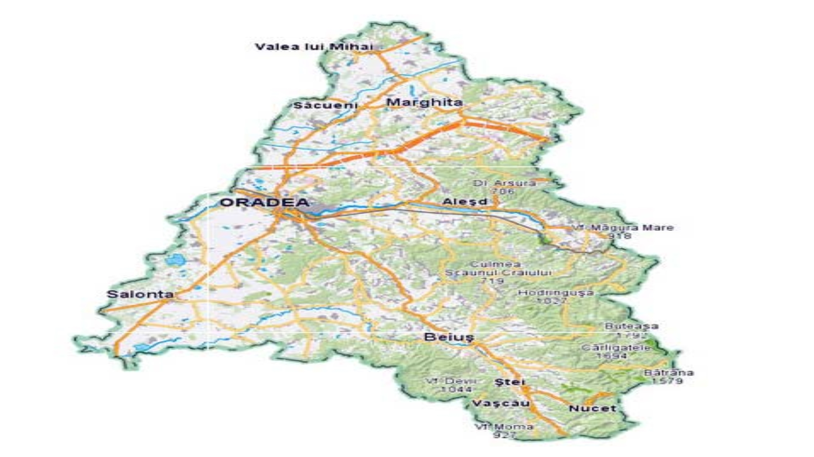
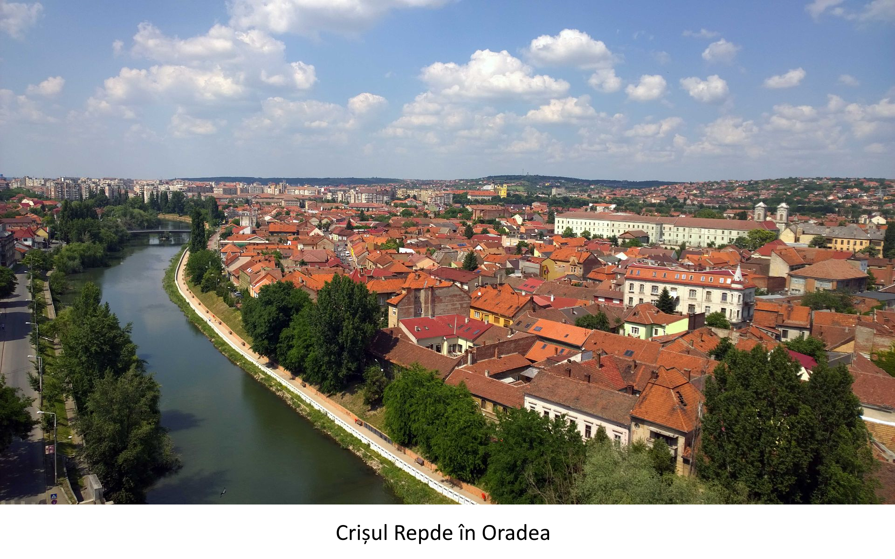
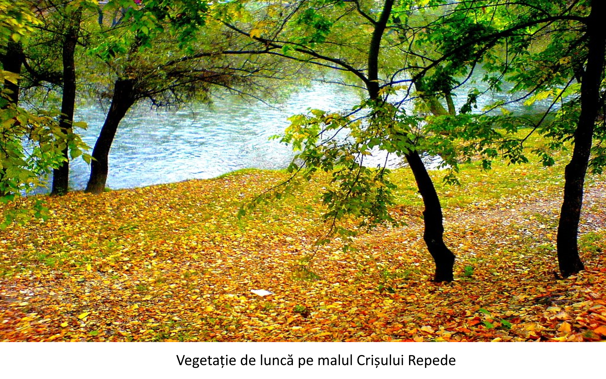

Așezarea orașului Oradea
| Localizare |
| Situat la numai 13 km de granița de vest a României, municipiul Oradea, reședința administrativă a județului Bihor, ocupă o poziție central-europeană privilegiată, constituind un important nod de comunicații, aflat la o distanță sensibil egală de capitalele regiunii: București (651 km), Viena (518 km), Budapesta (248 km), Praga (676 km). |
| Latitudinea nordică de 47 03' și longitudinea estică de 21 55' plasează Oradea pe cursul Crișului Repede într-o zonă deluroasă aflată în prelungirea Munților Apuseni. La altitudinea medie de 126 m deasupra nivelului mării, Oradea se găsește la deschiderea Văii Crișului Repede spre câmpie, într-o zonă de contact între prelungirile Munților Apuseni și Câmpia Banato-Crișană, arie de trecere de la relieful deluros (Dealurile Vestice, Dealurile Oradei, Dealurile Gepișului) către cel de câmpie. |
| Este accesibil cu automobilul/autobuzul, trenul sau avionul. În apropierea sa se găsesc localitățile-stațiuni Băile Felix și Băile 1 mai. În procesul de dezvoltare, Oradea a înglobat în structura sa satele Episcopia Bihor și Seleuș, în prezent urmărindu-se înglobarea comunelor din jurul orașului, prin crearea Zonei Metropolitane Oradea. |


| Hidrografie |
| Prin municipiul Oradea trec râul Crișul Repede, râul termal Peța, precum și pârăirile Pasteur, Sălbatic, Adona, Crișul Mic, toți afluenți ai Crișului Repede. Acesta străbate orașul chiar prin centru, creând o luncă în centrul istoric. În anii 1980, în dreptul satului Tileagd s-a construit primul hidrobaraj pe Crișul Repede. |

| Floră și faună |
| Flora municipiului nu diferă de cea a județului. În numeroase zone ale orașului cresc arbori de magnolii, iar în apropiere de Oradea există o pădure relativ întinsă de foioase. Râul Crișul Repede a creat în mai multe zone o luncă, unde vegetația este tipică acestui relief. |
| Animalele sălbatice lipsesc aproape în totalitate, existând totuși grupuri de rozătoare și mamifere mici, precum și căprioare, în pădurea Felix de lângă oraș.[33] Dar sunt și unele reptile cum ar fi șopârla și șarpele de apă care se află îndeosebi pe malurile Crișului Repede. Dintre mamifere putem aminti și vidra. În Crișul Repede trăiesc, de asemenea, mai multe specii de pești, cum ar fi : avat, biban, caras, crap, lin, păstrăv, roșioară, somn, șalău, știucă, clean ș.a. |

| Climă |
| Clima orașului este determinată de Vânturile de Vest, fiind, așadar, o climă temperat continentală, cu o temperatură medie anuală de 10,3 °C, pentru luna iulie media nedepășind 21 °C, în timp ce în ianuarie se înregistrează o medie de -1,7 °C. Precipitațiile înregistrează o medie anuală de 585,4 mm, destul de ridicată pentru o zonă de câmpie similară. |
| Temperatura medie a aerului (media lunară și anuală) |
| Perioada |
Ian |
Feb |
Mar |
Apr |
Mai |
Iun |
Iul |
Aug |
Sep |
Oct |
Nov |
Dec |
Anuală |
| 1961-2003 |
-1.7° |
0.5° |
5.2° |
10.8° |
16.2° |
19.1° |
20.8° |
20.4° |
15.9° |
10.7° |
5.3° |
0.2° |
10.3° |
| Demografie |
| Conform recensământului efectuat în 2011, populația municipiului Oradea se ridică la 196.367 de locuitori, în scădere față de recensământul anterior din 2002, când se înregistraseră 206.614 locuitori.[1] Majoritatea locuitorilor sunt români (67,59 %). Principalele minorități sunt cele de maghiari (23,07 %) și romi (1,09 %). Pentru 7,49 % din populație apartenența etnică nu este cunoscută.[2] Din punct de vedere confesional, majoritatea locuitorilor sunt ortodocși (55,8 %), dar există și minorități de reformați (13,62 %), romano-catolici (9,16 %), penticostali (4,77 %), baptiști (3,48 %) și greco-catolici (2,99 %). Pentru 8,19 % din populație, nu este cunoscută apartenența confesională. |
| Conform datelor furnizate de Institutului Național de Statistică (INS), la 1 ianuarie 2015 populația stabilă a municipiului Oradea era de 223.237 de locuitori,[36] menținându-se creșterea numărului de locuitori față de data recensământului efectuat în 2011, o creștere de aproximativ 12 %. |
Realizat de Vlad Luncan - 2022